Missão
Implementar estratégias e soluções ESG, promovendo desempenho socioambiental, geração de impactos positivos nos territórios e fortalecimento da responsabilidade das empresas, em alinhamento às melhores práticas internacionais.
DMS – Desempenho Socioambiental atua na estruturação e implementação de soluções socioambientais para grandes projetos de infraestrutura, com foco em gestão de riscos, leitura territorial, desempenho social e aderência às melhores práticas internacionais de sustentabilidade.
Apoiamos clientes estratégicos na gestão e mitigação de impactos socioambientais, em conformidade com requisitos das Instituições Financeiras Internacionais.
Combinamos consistência técnica, presença em campo e capacidade de execução para desenvolver soluções personalizadas, fortalecer a tomada de decisão e ampliar a previsibilidade dos projetos nos territórios.
Implementar estratégias e soluções ESG, promovendo desempenho socioambiental, geração de impactos positivos nos territórios e fortalecimento da responsabilidade das empresas, em alinhamento às melhores práticas internacionais.
Ser referência em gestão e desempenho socioambiental, atuando em projetos estratégicos, contribuindo para a mitigação de impactos adversos e para o desenvolvimento sustentável dos territórios e das comunidades locais.
Nossos valores
Nossa atuação
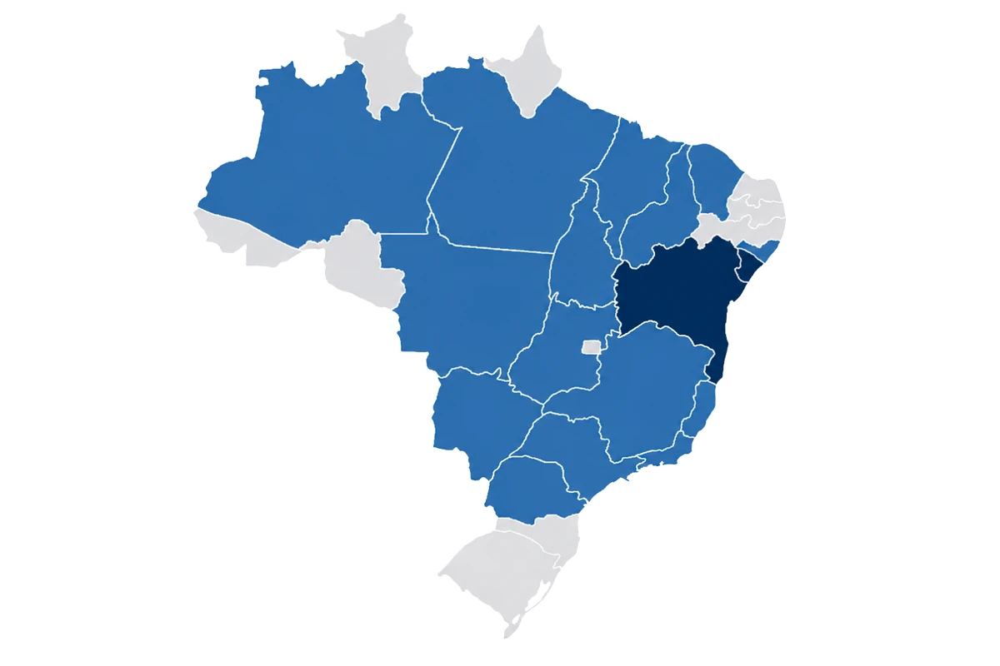
Presença estratégica no Nordeste
com escritórios em Sergipe e na BahiaParcerias internacionais em 6 países
ampliando nossa capacidade técnicaPadrões internacionais
A DMS atua em alinhamento com os padrões socioambientais e ESG exigidos pelas principais Instituições Financeiras Internacionais, apoiando clientes estratégicos e grandes empreendimentos de infraestrutura.
Instituições com as quais a DMS possui alinhamento técnico e experiência de atuação:


Esse alinhamento permite à DMS:
Padrões de desempenho IFC
Estabelece como identificar, avaliar, gerenciar e monitorar os riscos e impactos ambientais e sociais de um projeto ao longo de todo o seu ciclo de vida.
PD2Define requisitos para garantir condições de trabalho justas, seguras e respeitosas, protegendo os direitos dos trabalhadores.
PD3Promove o uso eficiente de recursos naturais e a prevenção da poluição, reduzindo os impactos ambientais das operações.
PD4Busca proteger a saúde, a segurança e o bem-estar das comunidades potencialmente afetadas pelas atividades do projeto.
PD5Estabelece medidas para evitar ou minimizar o deslocamento involuntário, assegurando compensação justa e restauração dos meios de vida das pessoas afetadas.
PD6Orienta a conservação da biodiversidade, a proteção dos ecossistemas e o uso sustentável dos recursos naturais vivos.
PD7Garante o respeito aos direitos, à cultura, aos territórios e à participação dos povos indígenas nas decisões que possam afetá-los.
PD8Protege o patrimônio cultural, prevenindo danos e promovendo sua preservação durante o desenvolvimento do projeto.
Nossas soluções
Estruturamos processos de acesso à terra, negociação fundiária, reassentamento, restauração de meios de vida e leitura socioterritorial, com foco em redução de riscos, participação social e viabilidade dos projetos.
Principais serviços
Apoiamos empresas na identificação, avaliação e gestão de riscos e impactos socioambientais, no fortalecimento da governança ESG e na estruturação de sistemas, planos e processos alinhados a requisitos legais, corporativos e internacionais.
Principais serviços
Integramos biodiversidade, serviços ecossistêmicos e agenda climática à gestão de projetos, apoiando estratégias de conservação, soluções baseadas na natureza, carbono e adaptação climática.
Principais serviços
Setores de atuação
Atuamos em setores estratégicos da economia brasileira, apoiando projetos e clientes em contextos complexos, com foco na gestão de riscos socioambientais, atendimento a padrões internacionais e fortalecimento da viabilidade dos empreendimentos no território.
Experiência transversal em setores e cadeias produtivas estratégicas
Selecione um setor para ver os detalhes
Clientes atendidos:
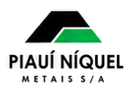
Em parceria com:


Clientes atendidos:
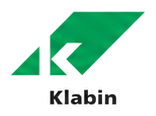
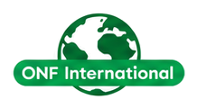
Clientes atendidos:
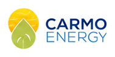
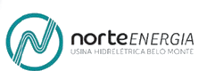
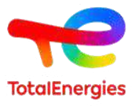
Em parceria com:

Clientes atendidos:
Em parceria com:
Parcerias estratégicas
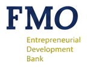
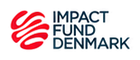
Projetos na prática
Assista aos vídeos ou escaneie os QR Codes para saber mais.
Neste vídeo é apresentado como a DMS conduziu o Plano de Reassentamento de um projeto de infraestrutura no estado de Sergipe, beneficiando mais de 130 famílias.
Anos depois da mudança, voltamos ao Recanto dos Cajueiros, em Sergipe, para ouvir quem viveu essa experiência e entender o que permaneceu: as histórias, os vínculos e as transformações.
Neste vídeo, apresentamos como a DMS estrutura processos participativos de acesso à terra, utilizando a negociação coletiva como estratégia para construir acordos amigáveis, reduzir riscos e fortalecer a legitimidade do projeto no território.
Conheça a atuação da DMS no Projeto Piauí Níquel.
Contato
Entre em contato para estruturarmos a melhor estratégia socioambiental para o seu projeto.